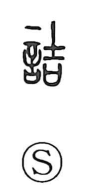

詰

Uncategorized
Kun: tsumeru, tsumaru, tsumu, najiru | On: kitsu
to cram ・ to stuff ・ to press ・ to question ・ to reproach ・ to scold
Explanation
詰 joins the speech element 言 with 吉 as its phonetic and guiding idea. In Shirakawa’s reading, 吉 shows a sacred axe set upon a covenant vessel (sai) that held written prayers, an image of sealing and preserving the efficacy of a petition. From this ritual act comes the sense of packing or filling something tight, and, by extension, of pressing for a result. When paired with 言, the character depicts pressing someone with words—crowding them verbally—so it comes to mean to cram, to demand an answer, to question closely, and to reproach or scold.